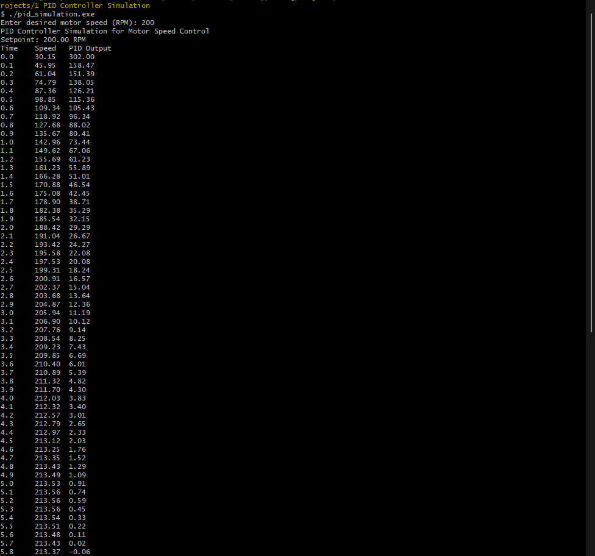
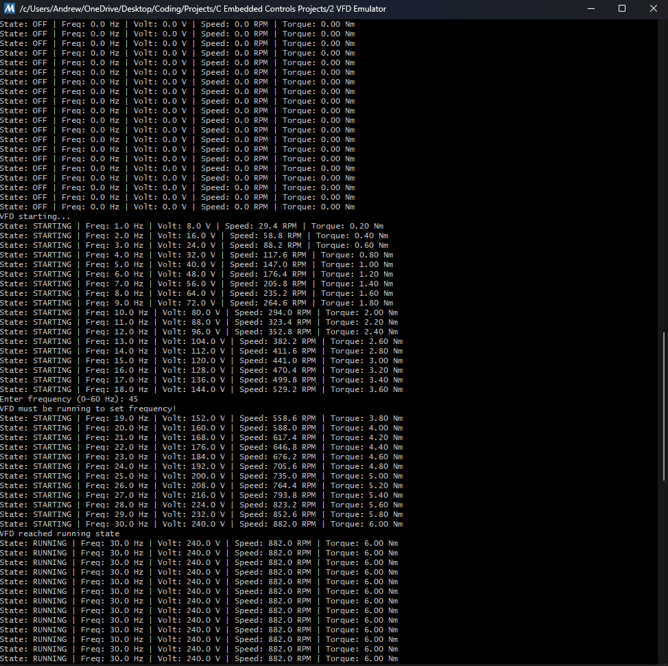
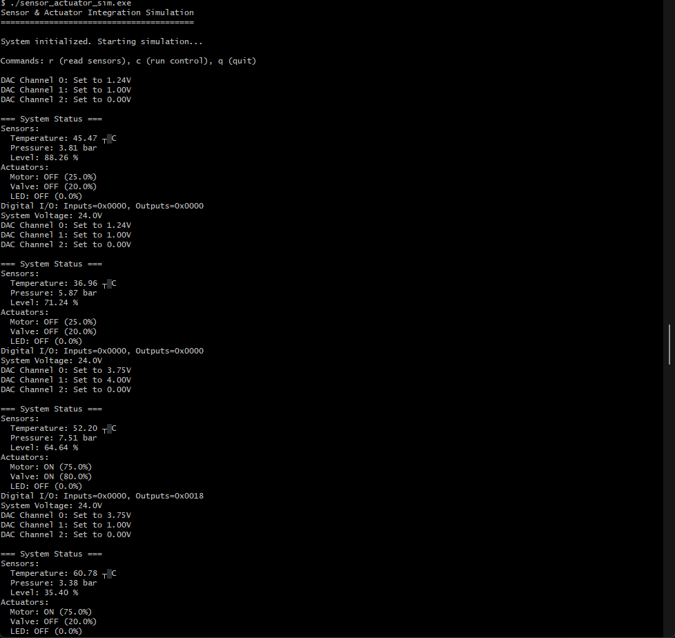
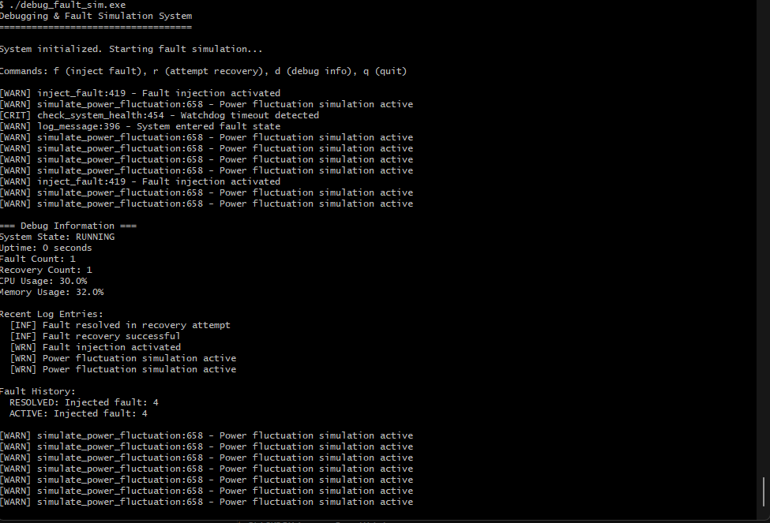
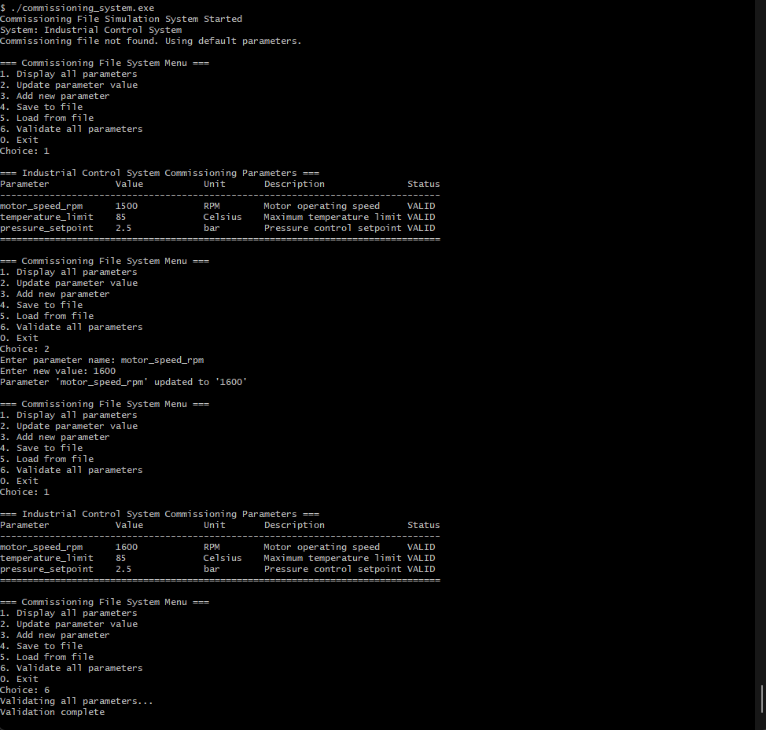
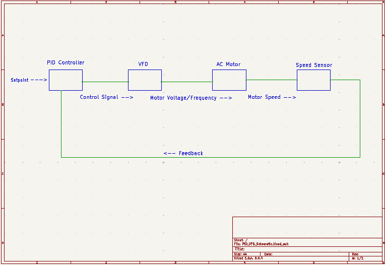

This portfolio showcases a collection of embedded C programming projects that are focused on industrial control and real-time systems. Projects include PID controller simulations, VFD emulators, sensor and actuator integration, advanced debugging and fault simulation, and commissioning file systems. Each project demonstrates practical embedded software engineering techniques and concepts applied to real-world industrial automation challenges.
A C program that simulates a PID (Proportional-Integral-Derivative) controller for motor speed control. Demonstrates embedded control logic, floating-point calculations, and simulation of sensors/actuators in C.
A C program that emulates the operation of a Variable Frequency Drive for motor speed control. Demonstrates industrial drive control concepts, state machines, and real-time simulation.
A C program simulating an embedded control system that reads sensor inputs and controls actuators. Demonstrates hardware signal processing, ADC/DAC simulation, and real-time control logic.
A C program demonstrating advanced debugging techniques and fault simulation for embedded systems. Showcases comprehensive error handling, logging, state tracking, and recovery mechanisms.
A C program simulating a commissioning file system for embedded control systems. Demonstrates file I/O, CSV parsing, parameter validation, and data persistence commonly used in industrial applications.
This schematic represents a PID-controlled motor system. The PID controller receives a desired speed input, called the setpoint, and compares it to the motor's actual speed from the feedback sensor. The PID calculates a control signal, which goes to the Variable Frequency Drive, or VFD, acting as the power amplifier to adjust the AC motor's voltage and frequency. The motor responds, and the sensor measures its speed, completing the feedback loop. Essentially, this shows how software and hardware interact to achieve precise motor control, which is what I demonstrated in my PID and VFD emulator projects. This schematic was made with KiCad.
Note: The content from all examples in this section was taken from geeksforgeeks.org.
A pointer is a variable that stores the memory address of another variable. Instead of holding a direct value, it holds the address where the value is stored in memory. It is the backbone of low-level memory manipulation in C. Accessing the pointer directly will just give us the address that is stored in the pointer. Here is an example of that:
#include
#include
int main() {
// Normal Variable
int var = 10;
// Pointer Variable ptr that
// stores address of var
int* ptr = &var;
// Directly accessing ptr will
// give us an address
// This dereferences the pointer
printf("%d", *ptr);
return 0;
}
//here is the output without the '&' : 0x7fff67b3056c #include
int main() {
int *ptr1;
char *ptr2;
// Finding size using sizeof()
printf("%zu\n", sizeof(ptr1)); //zu is used specifically for sizeof outputs
printf("%zu", sizeof(ptr2));
return 0;
} /* Null pointers are those pointers that do not point to any memory location. They can be
created by assigning NULL value to a pointer. A pointer of any type can be assigned the
NULL value.
Null pointers are generally used to represent the absence of any address. This allows
us to check whether the pointer is pointing to any valid memory location by checking
if it is equal to NULL. */
#include
int main() {
// Null pointer
int *ptr = NULL;
return 0;
} /* The void pointers in C are the pointers of type void. It means that they do not have
any associated data type. They are also called generic pointers as they can point to
any type and can be typecasted to any type. */
#include
int main() {
// Void pointer
void *ptr;
return 0;
} /* The wild pointers are pointers that have not been initialized with something yet.
These types of C-pointers can cause problems in our programs and can eventually
cause them to crash. If values are updated using wild pointers, they could cause
data abort or data corruption. */
int main() {
// Wild Pointer
int *ptr;
return 0;
}/* A pointer pointing to a memory location that has been deleted (or freed) is called a dangling pointer.
Such a situation can lead to unexpected behavior in the program and also serve as a source of bugs in C programs. */
#include
#include
int main() {
// malloc asks the heap to give you enough memory to store one integer
int* ptr = (int*)malloc(sizeof(int));
// Here we can print the address of the un-initialized pointer, since it is a
// generic pointer it expects "void*"
printf("%p\n", (void*)ptr);
// After below free call, ptr becomes a dangling pointer
free(ptr);
printf("Memory freed\n");
// removing Dangling Pointer
ptr = NULL;
return 0;
} /* In constant pointers, the memory address stored inside the pointer is constant
and cannot be modified once it is defined. It will always point to the same memory
address. */
#include
int main() {
int a = 90;
int b = 50;
// Creating a constant pointer
int* const ptr = &a;
// Trying to reassign it to b
ptr = &b;
return 0;
}
// OUTPUT
solution.c: In function ‘main’:
solution.c:11:9: error: assignment of read-only variable ‘ptr’
11 | ptr = &b;
| /* A function pointer is a type of pointer that stores the address of a function,
allowing functions to be passed as arguments and invoked dynamically. It is useful
in techniques such as callback functions, event-driven programs. */
#include
int add(int a, int b) {
return a + b;
}
int main() {
// Declare a function pointer that matches
// the signature of add() fuction
int (*fptr)(int, int);
// Assign address of add()
fptr = &add;
// Call the function via ptr
printf("%d", fptr(10, 5));
return 0;
}
// OUTPUT : 15 /* In C, we can create multi-level pointers with any number of levels such as – ***ptr3,
****ptr4, ******ptr5 and so on. Most popular of them is double pointer
(pointer to pointer). It stores the memory address of another pointer.
Instead of pointing to a data value, they point to another pointer. */
#include
int main() {
int var = 10;
// Pointer to int
int *ptr1 = &var;
// Pointer to pointer (double pointer)
int **ptr2 = &ptr1;
// Accessing values using all three
printf("var: %d\n", var);
printf("*ptr1: %d\n", *ptr1);
printf("**ptr2: %d", **ptr2);
return 0;
}
// OUTPUT
var: 10
*ptr1: 10
**ptr2: 10 #include
int main() {
int arr[5] = {10, 20, 30, 40, 50};
// Pointer to the first element of the array
int* ptr = arr; // same as &arr[0]
// Access elements using pointer arithmetic
printf("First element: %d\n", *ptr); // 10
printf("Second element: %d\n", *(ptr + 1)); // 20
printf("Third element: %d\n", *(ptr + 2)); // 30
// You can also use the pointer like an array
printf("Fourth element: %d\n", ptr[3]); // 40
printf("Fifth element: %d\n", ptr[4]); // 50
return 0;
} #include
int main() {
int arr[5] = {10, 20, 30, 40, 50};
int* ptr = arr; // points to arr[0]
// Increment pointer (move forward)
printf("Start: %d\n", *ptr); // 10
ptr++; // move to arr[1]
printf("After ++ : %d\n", *ptr); // 20
// Decrement pointer (move backward)
ptr--; // back to arr[0]
printf("After -- : %d\n", *ptr); // 10
// Add an offset
ptr = ptr + 3; // move to arr[3]
printf("ptr + 3: %d\n", *ptr); // 40
// Subtract an offset
ptr = ptr - 2; // back to arr[1]
printf("ptr - 2: %d\n", *ptr); // 20
return 0;
} The operator -> in C is called the arrow operator (sometimes called the structure pointer operator). It automatically dereferences for you.
#include
// Define a struct
struct Point {
int x;
int y;
};
int main() {
struct Point p = {10, 20}; // Declare a struct variable
struct Point* ptr = &p; // Pointer to the struct
// Access using the dot operator (direct variable)
printf("Using dot: p.x = %d, p.y = %d\n", p.x, p.y);
// Access using arrow operator (pointer to struct)
printf("Using arrow: ptr->x = %d, ptr->y = %d\n", ptr->x, ptr->y);
return 0;
} Signed means the number can be negative or positive, allowing for a wider range of values including negative numbers. Unsigned means the number is only positive (including zero), which provides a larger positive range but cannot represent negative values. This distinction is crucial in C for data types like int, char, and others, affecting memory usage and potential overflow behavior.
#include
int main() {
signed int a = -5; // signed allows negatives
unsigned int b = 5; // unsigned does NOT allow negatives
printf("Signed a = %d\n", a);
printf("Unsigned b = %u\n", b);
// Danger zone: wrapping
unsigned int c = 0;
c = c - 1; // goes below zero, wraps around
printf("Unsigned wrap-around: c = %u\n", c);
return 0;
} The restrict keyword is a type qualifier that was introduced in the C99 standard. It is used to tell the compiler that a pointer is the only reference or access point to the memory it points to, allowing the compiler to make optimizations based on that information.
#include
// Function that specifies its parameters as restricts
void add(int *restrict arr1, int *restrict arr2,
int *restrict res, int n) {
for (int i = 0; i < n; i++)
res[i] = arr1[i] + arr2[i];
}
int main() {
int arr1[] = {1, 2, 3, 4, 5};
int arr2[] = {10, 20, 30, 40, 50};
int res[5];
int n = 5;
// Calling function add
add(arr1, arr2, res, n);
for (int i = 0; i < n; i++)
printf("%d ", res[i]);
return 0;
}
/*
Syntax of restrict
The syntax for declaring a pointer with the restrict keyword is as follows:
type* restrict name;
type: The data type of the pointer (e.g., int, char, float).
restrict: The keyword that marks the pointer as restricted.
name: The name of the pointer variable.
*/ #include
void multiply_arrays(int *restrict arr1, int *restrict arr2, int *restrict result, int size) {
// Loop through the arrays and multiply corresponding elements
for (int i = 0; i < size; i++) {
// Multiply and store the result in the result array
result[i] = arr1[i] * arr2[i];
}
}
int main() {
// Initialize two arrays with values
int arr1[] = {1, 2, 3};
int arr2[] = {4, 5, 6};
int result[3];
// Call the multiply_arrays function to multiply elements of arr1 and arr2
multiply_arrays(arr1, arr2, result, 3);
// Print the resulting array
for (int i = 0; i < 3; i++) {
printf("%d ", result[i]);
}
return 0;
} In C, the volatile keyword is used to inform the compiler that the value of a variable may change at any time, without any action being taken by the code in the program. It is particularly useful in embedded systems, signal handlers, and multi-threaded applications. In this article, we will learn how to use the volatile keyword in C.
Volatile Keyword in C
We can use the volatile keyword for different purposes like declaring some global variables, signal handlers, variables across shared threads, etc. When a variable is declared as volatile, it tells the compiler: The compiler must not assume the value of the variable remains constant between accesses, so it should read the value from memory every time it is used. The compiler must not reorder instructions in a way that changes the access order of the volatile variable.
#include
#include
// Volatile variable to be accessed by multiple threads
volatile int volVar = 0;
// Mutex for synchronization
pthread_mutex_t mtx = PTHREAD_MUTEX_INITIALIZER;
// Function to increment the volatile variable
void* incValue(void* arg)
{
for (int i = 0; i < 10; i++) {
// Lock the mutex before accessing volVar
pthread_mutex_lock(&mtx);
volVar++;
// Unlock the mutex after modifying volVar
pthread_mutex_unlock(&mtx);
}
return NULL;
}
int main()
{
pthread_t t1, t2;
// Create two threads to increment volVar
pthread_create(&t1, NULL, incValue, NULL);
pthread_create(&t2, NULL, incValue, NULL);
// Wait for both threads to finish
pthread_join(t1, NULL);
pthread_join(t2, NULL);
// Output the final value of volVar
printf("Final value of volVar: %d\n", volVar);
return 0;
}
/*
This program shows how to safely share a variable between threads in C. The variable volVar
is marked volatile so the compiler doesn’t optimize its access since multiple threads may
change it. A mutex mtx is used so that only one thread can modify volVar at a time.
The function incValue() increments volVar ten times, locking and unlocking the mutex
around each increment to avoid race conditions. In main(), two threads are created that
both run incValue(). Each adds ten, so the final printed result is twenty. Without the
mutex, the threads could interfere with each other and the result would be wrong.
*/ In C, the extern keyword is used to declare a variable or a function whose definition is present in some other file. Basically, it extends the visibility of the variables and functions in C to multiple source files. Before going deeper into the topic, we need to know about a few terms: Declaration (a declaration only tells the compiler about the existence of an identifier and its type), Definition (in addition to the declaration, it also allocates the memory for that identifier), and Translation Unit (a single source file including all the header files used directly or indirectly in it). The usage syntax of extern is a multistep process. In the file where we want to use the variable/function, we have to provide extern declaration: extern var_type var_name; extern ret_type func_name (arg_types .... ).
#include
// Extern decalration that will prompt compiler to
// search for the variable ext_var in other files
extern int ext_var;
extern void func();
void printExt() {
printf("%d", ext_var);
}
int main() {
printExt();
printf("\n");
func();
return 0;
} #include
void func() {
printf("Hello");
}
// Definition of a variable
int ext_var = 22; Dynamic memory allocation techniques give programmer control of memory when to allocate, how much to allocate and when to de-allocate. Normal local variable defined in a function is stored in the stack memory. The limitations of such allocations are, size needs to known at compile time, we cannot change the size or delete the memory. With dynamic memory allocation, you allocate memory at runtime, giving you the ability to handle data of varying sizes. Dynamic resources are stored in the heap memory instead of the stack. The size of the array can be increased if more elements are to be inserted and decreased if less elements are inserted. The dynamically allocated memory stays there (if the programmer has not de-allocated it) even after the function call is over, so a function can return pointer to the allocated memory. In case of normal local variables/arrays, the memory/variables become invalid once the function call is over. malloc() The malloc() (stands for memory allocation) function is used to allocate a single block of contiguous memory on the heap at runtime. The memory allocated by malloc() is uninitialized, meaning it contains garbage values.
/*
Assume that we want to create an array to store 5 integers. Since the size of int is 4 bytes,
we need 5 * 4 bytes = 20 bytes of memory. This can be done as shown:
*/
#include
#include
int main() {
int *ptr = (int *)malloc(20);
// Populate the array
for (int i = 0; i < 5; i++)
ptr[i] = i + 1;
// Print the array
for (int i = 0; i < 5; i++)
printf("%d ", ptr[i]);
return 0;
} /*
In the previous malloc call, we hardcoded the number of bytes we need to store 5 integers. But
we know that the size of the integer in C depends on the architecture. So, it is better to
use the sizeof operator to find the size of type you want to store.
Moreover, if there is no memory available, the malloc will fail and return NULL.
So, it is recommended to check for failure by comparing the ptr to NULL.
Syntax
malloc(size);
*/
#include
#include
int main() {
int *ptr = (int *)malloc(sizeof(int) * 5);
// Checking if failed or pass
if (ptr == NULL) {
printf("Allocation Failed");
exit(0);
}
// Populate the array
for (int i = 0; i < 5; i++)
ptr[i] = i + 1;
// Print the array
for (int i = 0; i < 5; i++)
printf("%d ", ptr[i]);
return 0;
} The calloc() (stands for contiguous allocation) function is similar to malloc(), but it initializes the allocated memory to zero. It is used when you need memory with default zero values. Data can be inserted later.
Syntax
calloc(n, size);
#include
#include
int main() {
int *ptr = (int *)calloc(5, sizeof(int));
// Checking if failed or pass
if (ptr == NULL) {
printf("Allocation Failed");
exit(0);
}
// No need to populate as already
// initialized to 0
// Print the array
for (int i = 0; i < 5; i++)
printf("%d ", ptr[i]);
return 0;
} The free() function in C is used to deallocate memory that was previously allocated by malloc(), calloc(), or realloc(). It releases the allocated memory back to the system to avoid memory leaks and ensure efficient memory usage.
#include
int main() {
int *ptr = (int *)malloc(5 * sizeof(int));
if (ptr == NULL) {
return 1; // Allocation failed
}
// Use the allocated memory
// Free the allocated memory
free(ptr);
return 0;
} The realloc() function is used to resize a previously allocated memory block. It allows you to change the size of an existing memory allocation without needing to free the old memory and allocate a new block. Suppose we initially allocate memory for 5 integers but later need to expand the array to hold 10 integers. We can use realloc() to resize the memory block. It is important to note that if realloc() fails and returns NULL, the original memory block is not freed, so you should not overwrite the original pointer until you've successfully allocated a new block. To prevent memory leaks, it's a good practice to handle the NULL return value carefully.
#include
#include
int main() {
int *ptr = (int *)malloc(5 * sizeof(int));
// Reallocation
int *temp = (int *)realloc(ptr, 10 * sizeof(int));
// Only update the pointer if reallocation is successful
if (temp == NULL)
printf("Memory Reallocation Failed\n");
else
ptr = temp;
return 0;
} #include
#include
int main() {
// Initially allocate memory for 5 integers
int *ptr = (int *)malloc(5 * sizeof(int));
// Check if allocation was successful
if (ptr == NULL) {
printf("Memory Allocation Failed\n");
exit(0);
}
// Now, we need to store 8 elements so
// Reallocate to store 8 integers
ptr = (int *)realloc(ptr, 8 * sizeof(int));
// Check if reallocation was successful
if (ptr == NULL) {
printf("Memory Reallocation Failed\n");
exit(0);
}
// Assume we only use 5 elements now
for (int i = 0; i < 5; i++) {
ptr[i] = (i + 1) * 10;
}
// Shrink the array back to 5 elements
ptr = (int *)realloc(ptr, 5 * sizeof(int));
// Check if shrinking was successful
if (ptr == NULL) {
printf("Memory Reallocation Failed\n");
exit(0);
}
for (int i = 0; i < 5; i++)
printf("%d ", ptr[i]);
// Finally, free the memory when done
free(ptr);
return 0;
} Stack
Memory is fixed size and managed automatically.
Used for local variables and function calls.
Fast access, automatically cleaned up when function ends.
Heap
Memory is dynamic and manually managed.
Used for malloc/calloc/realloc.
Slower access, must free memory manually to avoid leaks.
#include
#include
void exampleFunction() {
int stackVar = 10; // Stored on the stack
printf("Stack variable: %d\n", stackVar);
// Automatically cleaned up when function ends
}
int main() {
exampleFunction();
// Heap allocation
int *heapPtr = (int *)malloc(sizeof(int));
if (heapPtr != NULL) {
*heapPtr = 20;
printf("Heap variable: %d\n", *heapPtr);
free(heapPtr); // Must manually free to avoid leak
}
return 0;
} Preprocessors are programs that process the source code before the actual compilation begins. They are not part of the compilation process but operate separately, allowing programmers to modify the code before compilation. It is the first step that the C source code goes through when being converted into an executable file. Main types of Preprocessor Directives are Macros, File Inclusion, Conditional Compilation and Other directives like #undef, #pragma, etc. Mainly these directives are used to replace a given section of C code with another C code. For example, if we write "#define PI 3.14", then PI is replaced with 3.14 by the preprocessor.
/*
Macros are used to define constants or create functions that are substituted by the
preprocessor before the code is compiled. The two preprocessors #define and #undef are used
to create and remove macros in C.
#define token value
#undef token
where after preprocessing, the token will be expanded to its value in the program.
Example:
*/
#include
// Macro Definition
#define LIMIT 5
int main(){
for (int i = 0; i < LIMIT; i++) {
printf("%d \n", i);
}
return 0;
}
// OUTPUT : 0 1 2 3 4
/*
A macro defined previously can be undefined using #undef preprocessor. For example, in the above code,
*/
// Undefine macro
#undef LIMIT /*
Macros With Arguments
We can also pass arguments to macros. These macros work similarly to functions. For example,
#define foo(a, b) a + b
#define func(r) r * r
Let us understand this with a program:
*/
#include
// macro with parameter
#define AREA(l, b) (l * b)
int main(){
int a = 10, b = 5;
// Finding area using above macro
printf("%d", AREA(a, b));
return 0;
} /*
File inclusion allows you to include external files (header files, libraries, etc.) into the current program. This is typically done using the #include directive, which can include both system and user-defined files.
Syntax
There are two ways to include header files.
#include
#include "filename"
The '<' and '>' brackets tell the compiler to look for the file in the standard directory while double quotes ( " " ) tell the compiler to search for the header file in the source file's directory.
Example:
*/
// Includes the standard I/O library
#include
int main() {
printf("Hello World");
return 0;
} | Specifier | Type | Notes |
|---|---|---|
| Integer types | ||
| %d | int | Signed decimal |
| %i | int | Signed decimal (same as %d) |
| %u | unsigned int | Unsigned decimal |
| %o | unsigned int | Octal |
| %x | unsigned int | Hexadecimal (lowercase) |
| %X | unsigned int | Hexadecimal (uppercase) |
| %ld | long int | Signed long decimal |
| %lu | unsigned long int | Unsigned long decimal |
| Floating point types | ||
| %f | float / double | Decimal notation |
| %e | float / double | Scientific notation (lowercase e) |
| %E | float / double | Scientific notation (uppercase E) |
| %g | float / double | %f or %e, whichever is shorter |
| %G | float / double | %f or %E, whichever is shorter |
| Character / string | ||
| %c | char | Single character |
| %s | char* | Null-terminated string |
| Pointer / address | ||
| %p | void* | Memory address (pointer) |
| Misc / special | ||
| %% | N/A | Prints a literal % |
// Finding size using sizeof()
printf("%zu\n", sizeof(ptr1)); // prints size of int pointer (usually 8 bytes on 64-bit)
printf("%zu", sizeof(ptr2)); // prints size of char pointer (usually also 8 bytes)Structs and unions are user-defined data types in C that group variables. A struct allocates separate memory for each member, allowing all members to be accessed independently. A union shares the same memory space for all members, so only one member can hold a value at a time. This example demonstrates how structs and unions differ in memory usage and access, using characters with either a personality string or a firmware version number.
In the character struct example, the union will only ever access one of its two members at once, demonstrating how memory is shared between the members and only one value is stored at a time.
#include
#include
typedef struct {
int x;
float y;
char z;
} mystr;
typedef union {
int x;
float y;
char z;
} myunion;
typedef struct {
char *name;
bool isRobot;
union {
char *personality;
int firmware_version;
};
} character;
void printCharacter(character* c){
printf("Character: %s --", c -> name);
if(c -> isRobot){
printf("version %i", c -> firmware_version);
}
else {
printf("%s", c -> personality);
}
printf("\n");
}
int main()
{
character tarkus;
character r2d2;
tarkus.name = "Dark Iron Tarkus";
tarkus.isRobot = false;
tarkus.personality = "Strong and silent leader";
r2d2.name = "R2";
r2d2.isRobot = true;
r2d2.firmware_version = 22;
printCharacter(&tarkus);
printCharacter(&r2d2);
return 0;
} Comprehensive guide to C programming fundamentals, memory management, pointers, data structures, and embedded systems concepts. Essential reference for embedded software development.
Complete C++ reference covering object-oriented programming, STL, templates, and modern C++ features. Includes examples relevant to embedded systems and real-time applications.